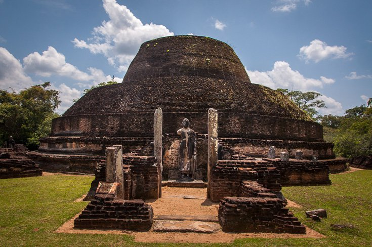
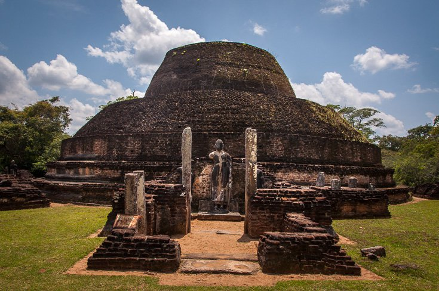
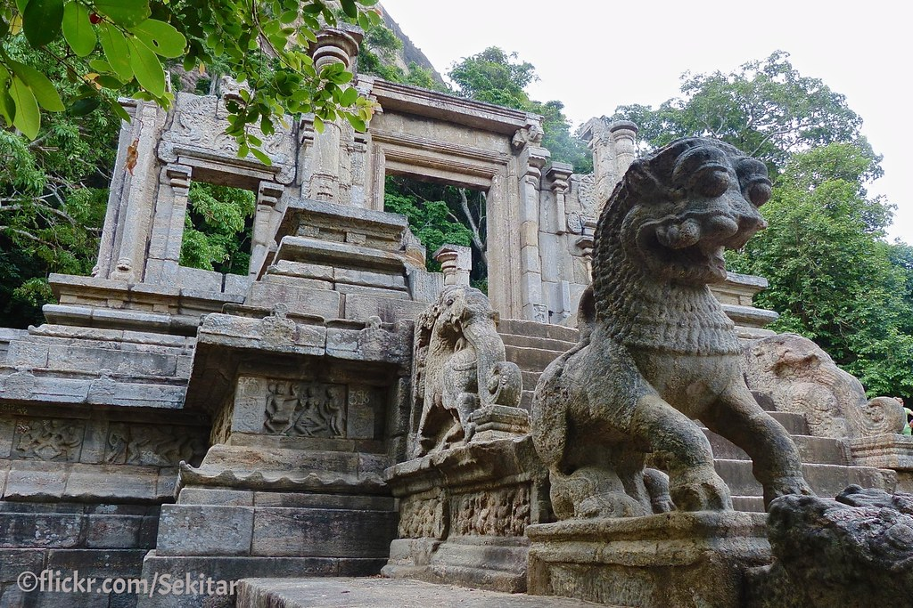
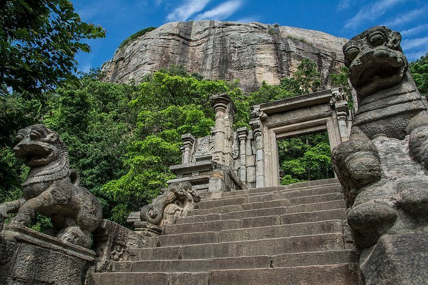
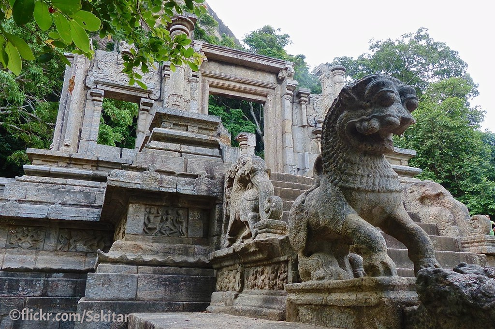
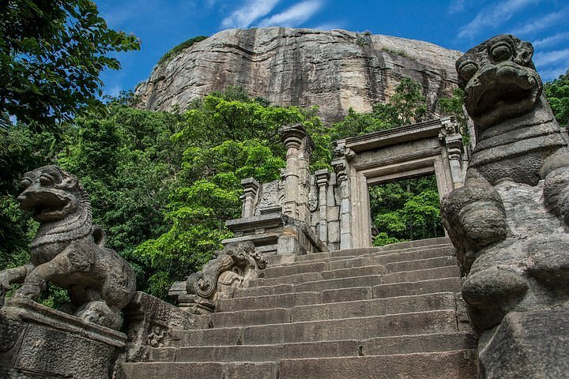
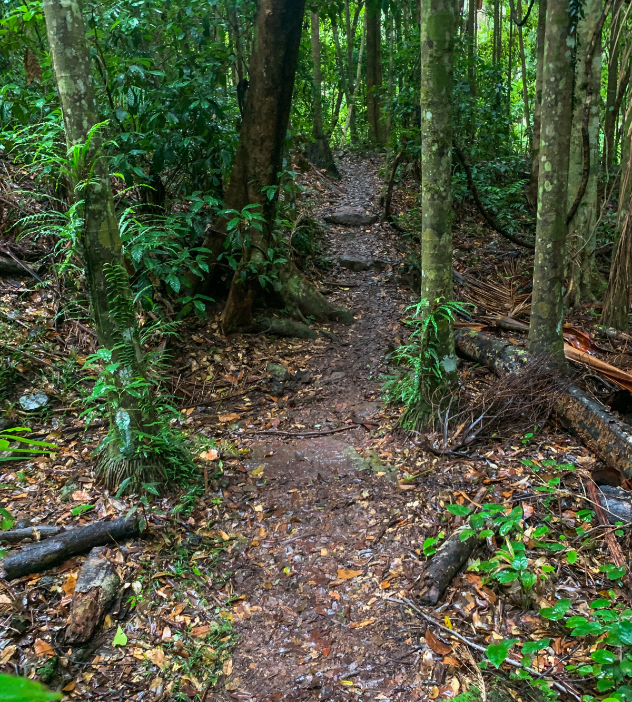
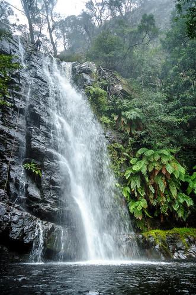
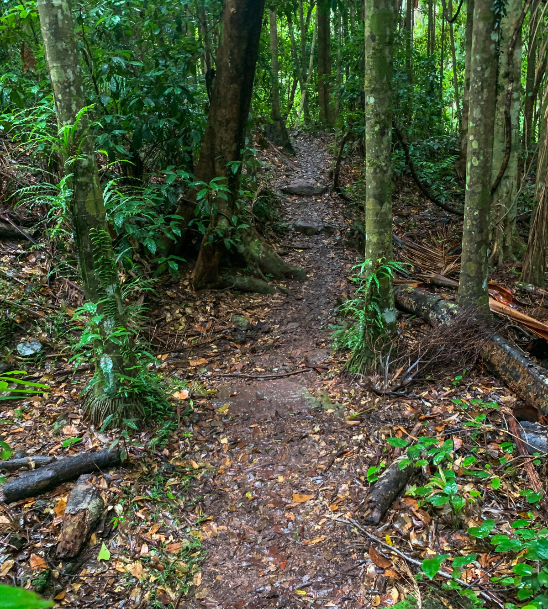
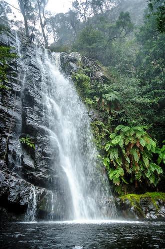

Sacred City of Anuradhapura
The Sacred City of Anuradhapura, located in the North Central Province of Sri Lanka, is one of the island's most ancient and revered capitals. Established in the 4th century BCE, Anuradhapura served as the center of Theravada Buddhism and Sinhalese political power for over a thousand years. The city's history is deeply interwoven with the rise of Buddhism in Sri Lanka, and it is considered one of the most important religious and archaeological sites in South Asia.
Among its many treasures, the city is home to the sacred Sri Maha Bodhi - a tree grown from a sapling of the original Bodhi tree in India, under which the Buddha attained enlightenment. The site also features grand stupas like Ruwanwelisaya, Jetavanaramaya, and Abhayagiri, as well as ancient monasteries, intricate stone carvings, and sophisticated irrigation systems. Now a UNESCO World Heritage Site, Anuradhapura remains a living spiritual center and a symbol of Sri Lanka's rich cultural and religious legacy.

 



 





 


